Benchmark options:
-r 3 -v --executables="r${rev}::./ruby -I./lib -I. -I.ext/common ./tool/runruby.rb --extout=.ext --;r${rev}-nogems::./ruby -I./lib -I. -I.ext/common ./tool/runruby.rb --extout=.ext -- --disable-gems"
uname -a : Linux hal 2.6.32-43-generic #97-Ubuntu SMP Wed Sep 5 16:43:09 UTC 2012 i686 GNU/Linux
Updated at : 2012-10-13 21:51:53+09:00
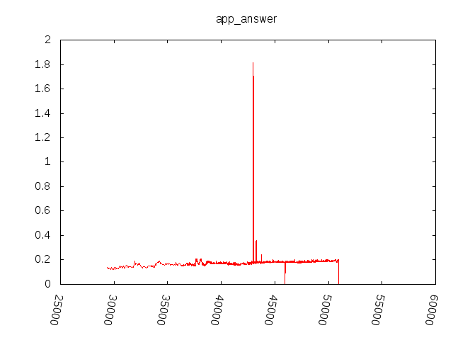

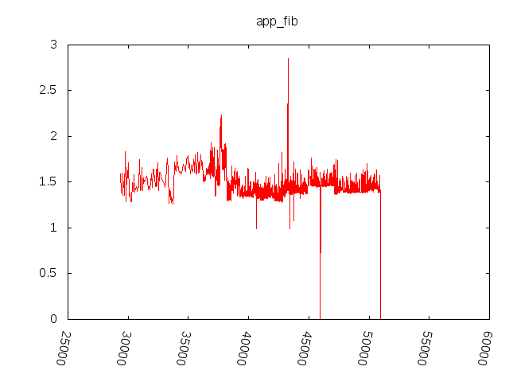
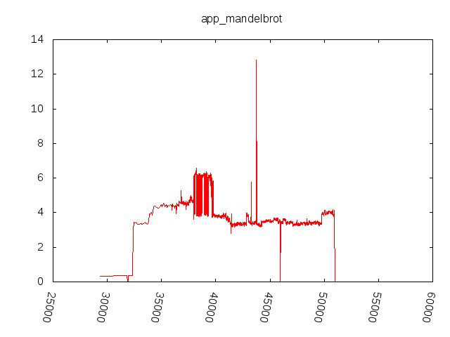


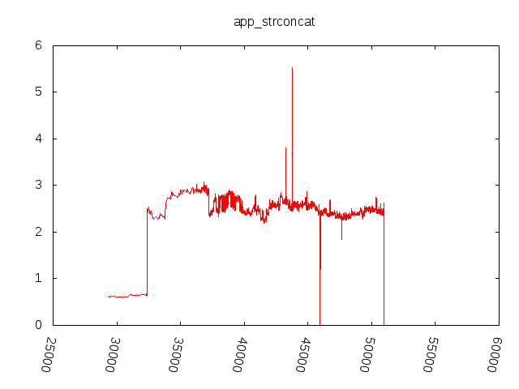


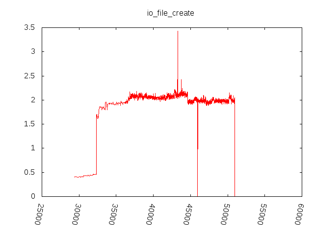
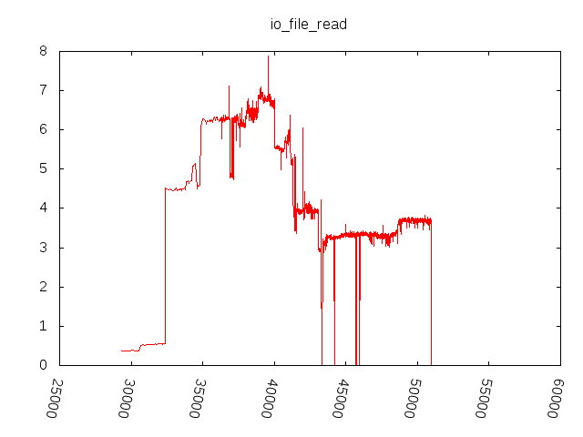
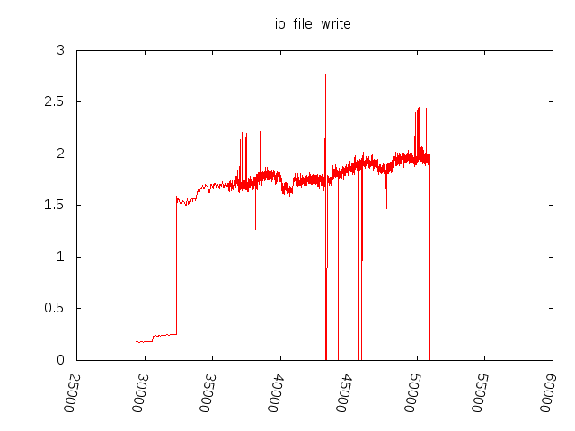

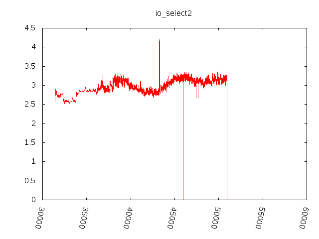


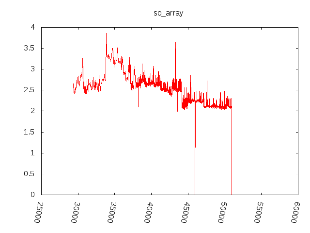


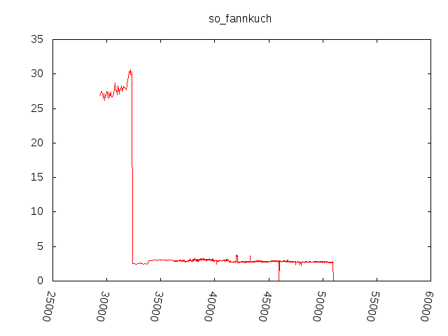


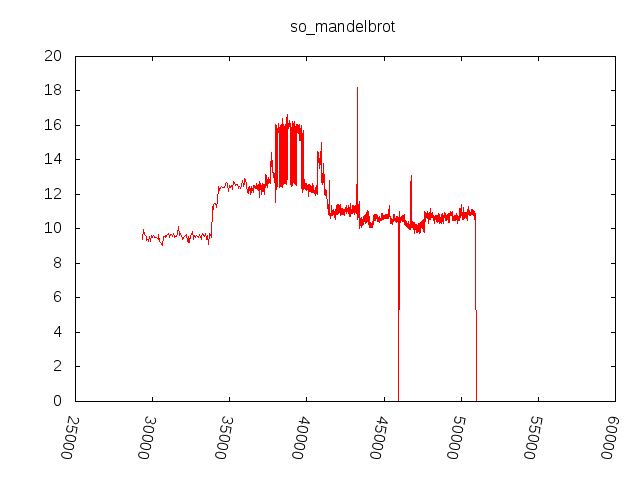


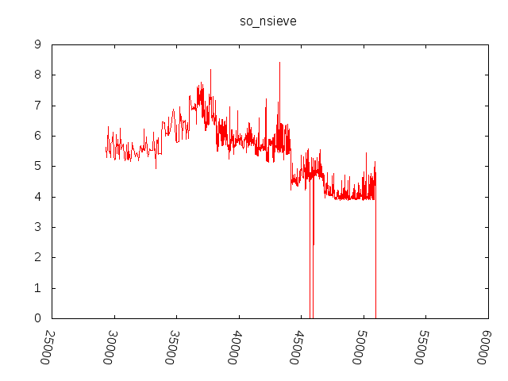


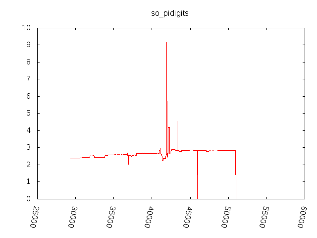


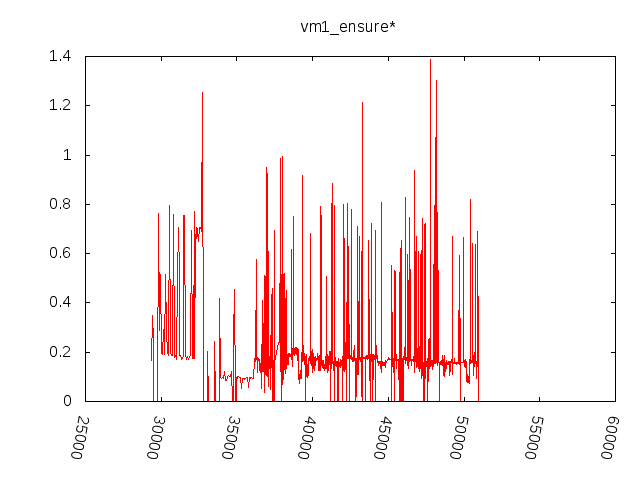


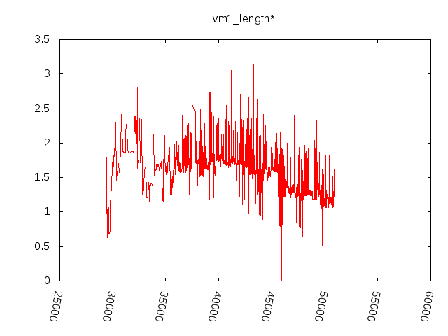


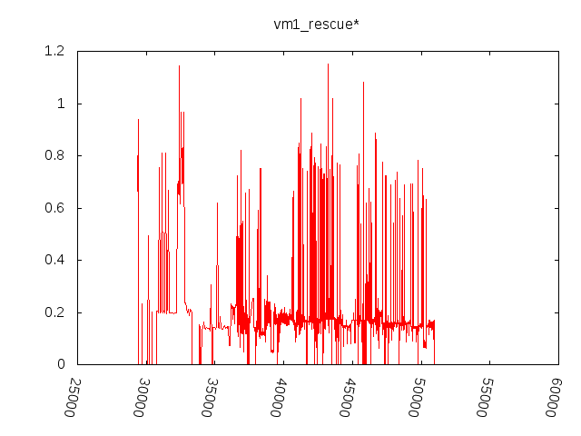

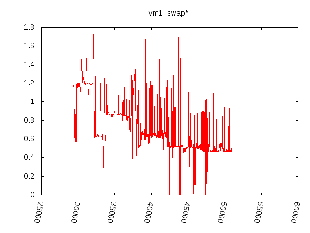
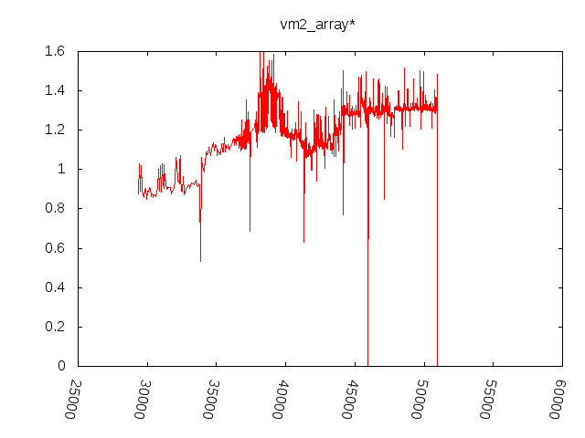

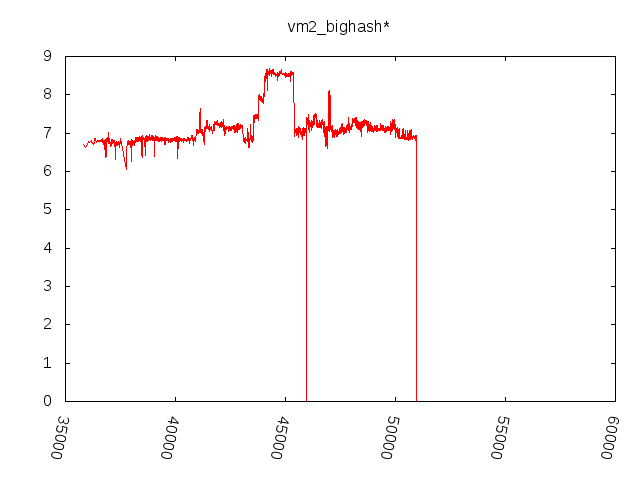

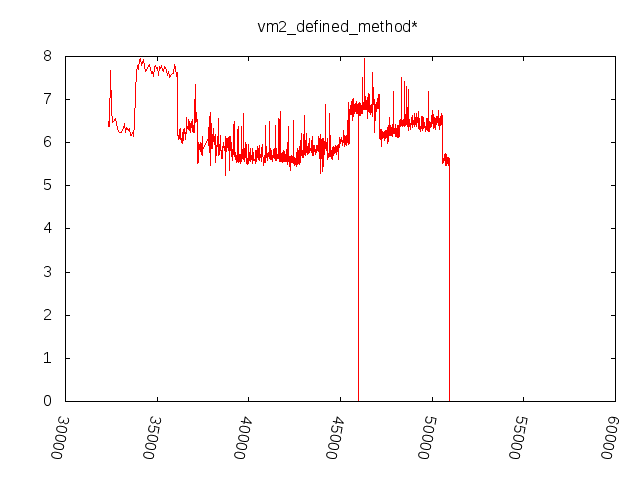


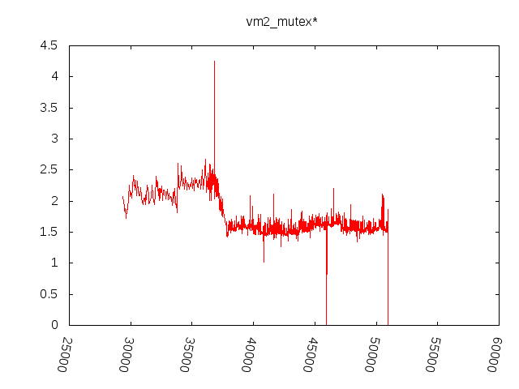

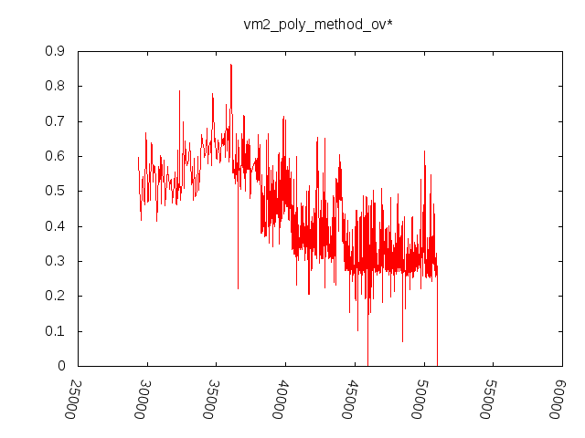


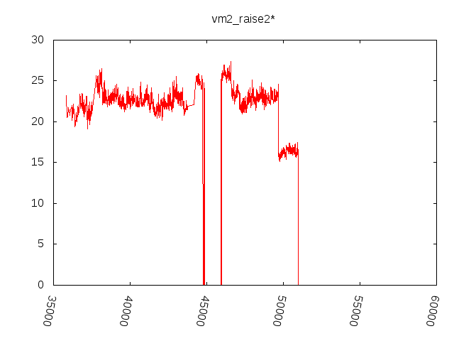


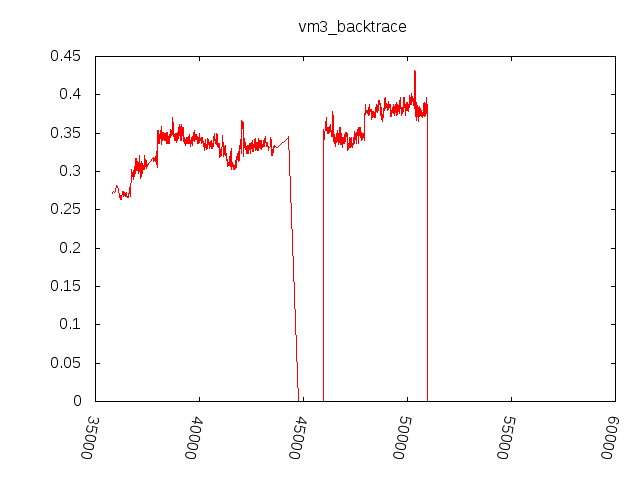


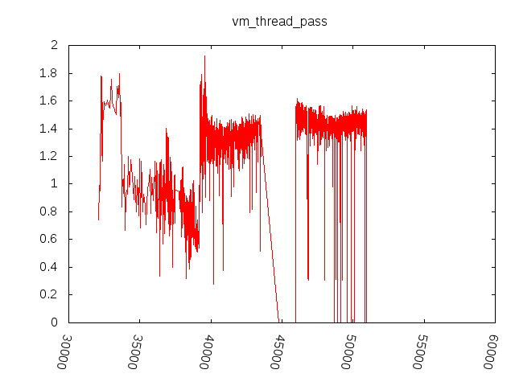

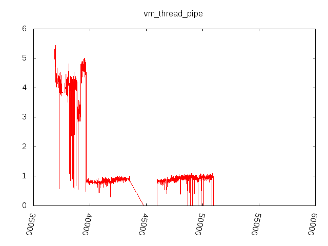